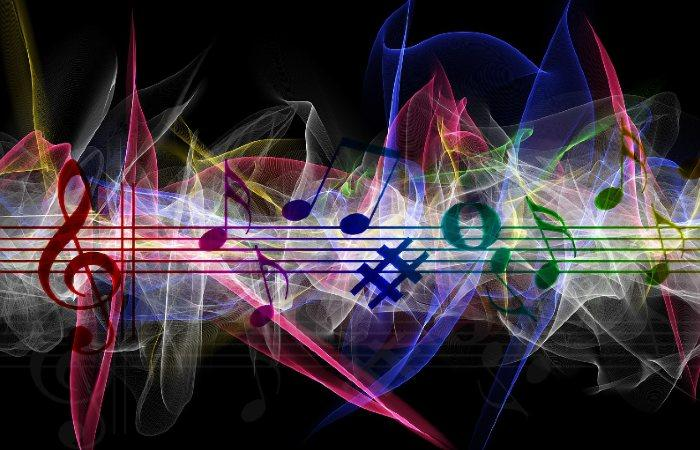

{kind=link}
{kind=link}
{kind=link}
{kind=link}
{kind=link}
{kind=link}

Por: Jaime Adrian De Blas Tellez.
Etiquetas: Instrumentos Musicales.
Categosrias. Musica.
La música es un conjunto de sonidos y silencios, organizados de manera lógica, que se rige por una serie de leyes como la armonía, el ritmo y la melodía, haciendo uso de la sensibilidad que caracteriza al ser humano con respecto a la emoción y percepción de elementos artísticos. Ciertamente, la música tiene una connotación mayormente espiritual y emocional, por lo que su complejidad sólo ha ido aumentando a lo largo de la historia, pues, no se ha logrado definir lo que realmente representa, más allá del uso corriente que se le da.
El concepto de música ha evolucionado desde su origen en la
antigua Grecia, donde la poesía, la música y la danza eran sin distinción como un arte único. Durante varios
años, su definició se ha vuelto más compleja, ya que, los compositores que se destacan en el marco de
diversas experiencias artísticas en la frontera han producido obras que, aunque podrían considerarse
musicales, extienden los límites del concepto de esta como un arte.
Como todas las manifestaciones artísticas, es un producto cultural. El propósito de lo que es la música y
escuchar música, representa el arte de provocar una experiencia estética en el oyente y expresar
sentimientos, emociones, circunstancias, pensamientos o ideas.
¿Qué es la música? se puede decir que, la música representa para el ser humano un estímulo directo al campo
perceptivo del cerebro, la música instrumental, música relajante, musica para concentrarse y la música
clásica desarrollan sonidos delicados muchos más lentos que otros géneros, el cual facilitan el flujo en el
cerebelo, facilitando alcanzar un estado de relajación, comunicación, y ambientación para la persona. Cabe
destacar que, son muy recomendadas las melodías para dormir a personas con problemas para conciliar el sueño.
Tiene tres componentes o elementos básicos que son
la melodía, armonía y ritmo.
La melodía: Es lo más fácil de recordar, la esencia de la canción y lo que la hace reconocible.
Las estructuras melódicas que tienen una entidad por sí mismas se llaman frases, por analogía con
las frases lingüísticas. En la música contemporánea, las frases se pueden clasificar
como riffs (repetitivo) o solos (no repetitivo). La melodía tiene un componente cultural muy
fuerte, acá se adhieren las estructuras melódicas occidentales. Esta, tiene una dimensión fundamentalmente
horizontal con progresivos sucesos en el tiempo, combinando ritmo y tono.
La armonía: Si la melodía tenía un componente horizontal, la armonía es eminentemente vertical. Ésta
cumple la función de acompañamiento, marco y base de las melodías. Hablar de armonía es hablar de
acordes y sus cadencias. Un acorde es un conjunto de 3 o más notas que se tocan o se perciben
simultáneamente. La nota más seria del acorde recibe el nombre de nota fundamental y es lo que le da el
nombre al acorde. El orden de la nota fundamental en su escala correspondiente nos da el grado del
acorde y por lo tanto, su función.
El ritmo: El ritmo es la parte dinámica, organizativa y repetitiva de la música. Las primeras
composiciones musicales de seres humanos fueron exclusivamente rítmicas, golpeando elementos
naturales.
La unidad fundamental del ritmo es la brújula. Las medidas se nombran como fracciones, por lo que el
numerador indica el número de divisiones que tiene cada medida y el denominador indica la duración de
esas divisiones. En el ritmo de 3/4 (leído tres veces cuatro), típico del vals, cada medida estaría
compuesta de 3 negros.
La medida 9/8 que se usa en música clásica y jazz tendría 9 octavos para cada medida. Existen estructuras
rítmicas más complejas, utilizadas en géneros como el jazz o el flamenco, formados por compases de
amalgama donde se combinan varios tipos de compases en el mismo ritmo.
Los parámetros del sonido pueden clasificarse
sólo en función de cuatro parámetros fundamentales que son los siguientes: la altura
(aguda o grave), intensidad (fuerte o débil), duración (larga o corta) y timbre (qué o quién emite el
sonido). No existe algún otro que pueda ser analizado, de hecho, tanto los músicos como los físicos
están de acuerdo en eso.
La altura: Es el resultado de la frecuencia producida por un cuerpo de sonido; es decir, el número de
ciclos de vibraciones por segundo o hertz (Hz) que se emiten. En consecuencia, los sonidos se pueden
definir como «bajo» y «alto». Cuanto más alta sea la frecuencia, más nítido (o más alto) será el sonido.
La longitud de onda es la distancia medida en la dirección de propagación de la onda, entre dos puntos
cuyo estado de movimiento es idéntico; es decir, alcanzan su máximo y mínimo al mismo tiempo.
La duración: Corresponde a la duración de las vibraciones que producen un sonido. La duración del
sonido está relacionada con el ritmo. Ésta se representa en la onda por los segundos que contiene
La intensidad. Es la fuerza con la que se produce un sonido, dependiendo de la energía. La intensidad se
desarrolla mediante una onda por la amplitud.
El timbre: Es la calidad que distingue los diferentes instrumentos o voces, aunque producen sonidos con
la misma altura, duración e intensidad. Los sonidos que se escuchan regularmente son complejos, ya que
forman parte de un conjunto de sonidos simultáneos como sobretonos, tonos y armónicos. Pero que se pueden
percibir como uno (sonido fundamental). El timbre depende de la cantidad de armónicos o la forma de la
onda que tiene un sonido y la intensidad de cada uno de ellos, lo que se denomina espectro. El timbre
está representado en una onda por el dibujo. Un sonido puro, como la frecuencia fundamental o cada
sobretono, está representado por una onda sinusoidal, mientras que un sonido complejo es la suma de las
ondas sinusoidales puras. El espectro es una sucesión de barras verticales distribuidas a lo largo de un
eje de frecuencia y que representan cada una de las ondas sinusoidales correspondientes a
cada sobretono, y su altura indica la cantidad que cada una contribuye al sonido resultante.
Las notas musicales representan un concepto
utilizado para expresar la altura o el tono de un sonido. Las notas son nombres para ciertas
frecuencias que permiten decir, que un sonido corresponde a cierta nota, es una combinación de varias
notas, está entre dos notas. Por lo tanto, una nota se puede denotar según la convención musical o por
la expresión de su frecuencia, por ejemplo, 4 es igual a 440 hertz, o vibraciones por segundo en la
sintonización estándar, o 444 hertz en la sintonización de la cámara.
Generalmente se llama incorrectamente «nota» a los signos que expresan la duración del sonido, cuando en
realidad estas son las cifras. Los nombres de las notas musicales provienen del canto gregoriano a
San Juan Bautista, popular en la Edad Media.
Las figuras musicales son los símbolos que asignan a las notas musicales su duración, que se mide en
tiempos. Estas figuras nos dicen la cantidad de veces que la nota que representa dura. Sin embargo, l
as figuras no tienen un valor de tiempo definido; el valor es asignado por el cifrado de la brújula. Las
figuras de las notas en la música son las siguientes: blanca, negra, redonda, corchea y
semicorchea, triplecorchea y tetracorchea.
Los primeros signos de civilización
datan de 50.000 a.C., en la prehistoria. La relación del ser humano con el sonido podría entenderse de
una manera simple. Los rudimentarios registros pictóricos corroboran que el sonido durante la
prehistoria representaba una señal de vida, esto resaltando así en gran enlace entre el ruido y
la danza.
Para esta época, el entorno presentaba una serie de sonidos y movimientos que el hombre trató de
imitar, utilizando algunas herramientas para producirlos entre las cuales se encontraban:
huesos, ramas, rocas, entre muchas otras.
Más tarde, esta práctica se usaría como un ritual para celebrar la caza o las celebraciones alrededor del
fuego. En estos, los hombres revelarían todas sus sensaciones experimentadas a través del uso de la voz,
utilizando de manera diferente a la habitual. Estas historias fueron acompañadas por algunos instrumentos
tallados en hueso, madera o fruta dura.
| Genero Musical. | Femenino. | Masculino. | Total. |
|---|---|---|---|
| Metal | 10 | 100 | 110 |
| Pop | 50 | 50 | 100 |
| Rock | 100 | 200 | 300 |
| Otros | 100 | 100 | 200 |
La musica es el alma de todos lo pueblos.
Un pueblo sin musica.
es un pueblo sin halma.
¡No desaprobeches una oportunidad toca lo que sientes en la guitarra!
Por: Jaime Adrian De Blas Tellez.
Etiquetas: Instrumentos Musicales.
Categosrias. Musica.